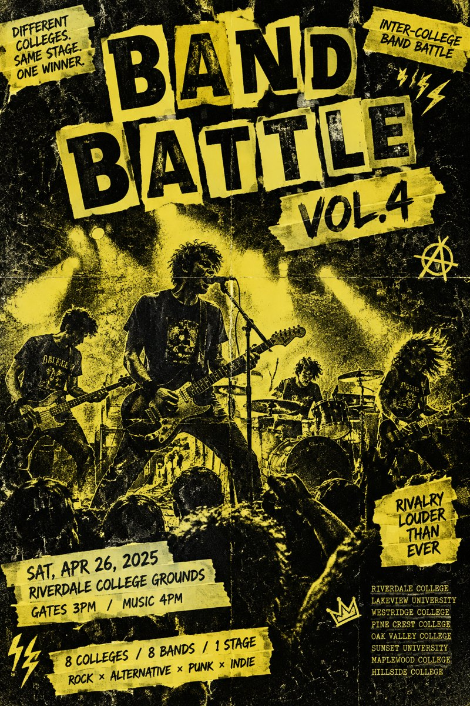

「代替わりしても続く団体」をつくる：軽音サークル代表に聞く

4年生が抜けても、ライブの質が落ちない団体がある。違いは「人」ではなく「引き継ぎの仕組み」だった。慶應軽音サークルの代表・やまだ さんに、毎年30人が入れ替わる団体を続けるコツを聞いた。
引き継ぎ資料は「1枚」にする
毎年いちばん困るのは、機材の予約方法やライブハウスとのやりとりが、特定の人の頭の中にしかないこと。うちは「この1枚を見れば次の代が回せる」という資料を、代替わりの1か月前から一緒につくります。
「辞める人が悪いんじゃなくて、辞めても回る形にしてないのが悪い」
— やまだ（慶應軽音サークル 代表）
ライブは「告知の早さ」で決まる
集客は当日の演奏より、告知の早さで8割決まる。3週間前にはチケットページを公開して、出演順が決まる前でも「行く理由」を先に出すようにしています。